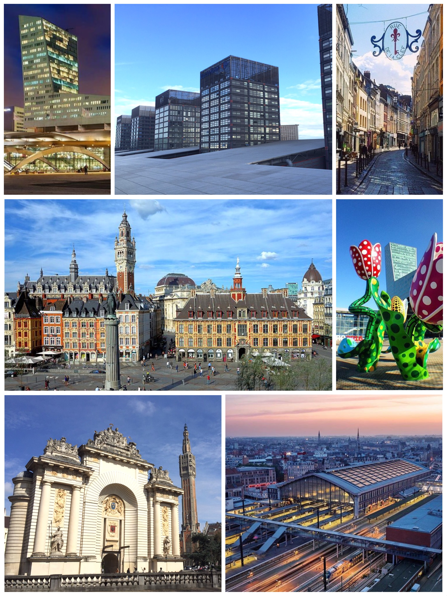

dans toute sa splendeur
Lille est la capitale des Hauts-de-France, une région du nord de la France. Elle se trouve à proximité de la frontière belge. Aujourd'hui centre culturel et ville universitaire animée, elle fut autrefois une importante plateforme marchande des Flandres françaises, et de nombreuses influences flamandes demeurent encore. Le centre historique, le Vieux Lille, se caractérise par ses maisons de ville du XVIIe siècle en briques rouges, ses ruelles piétonnes pavées et sa Grand'Place centrale.
Ici vous trouvez toutes les actulalités les plus incroyables et utiles de Lille par zoomsurLille.fr, n'hésitez pas à visiter leur site.